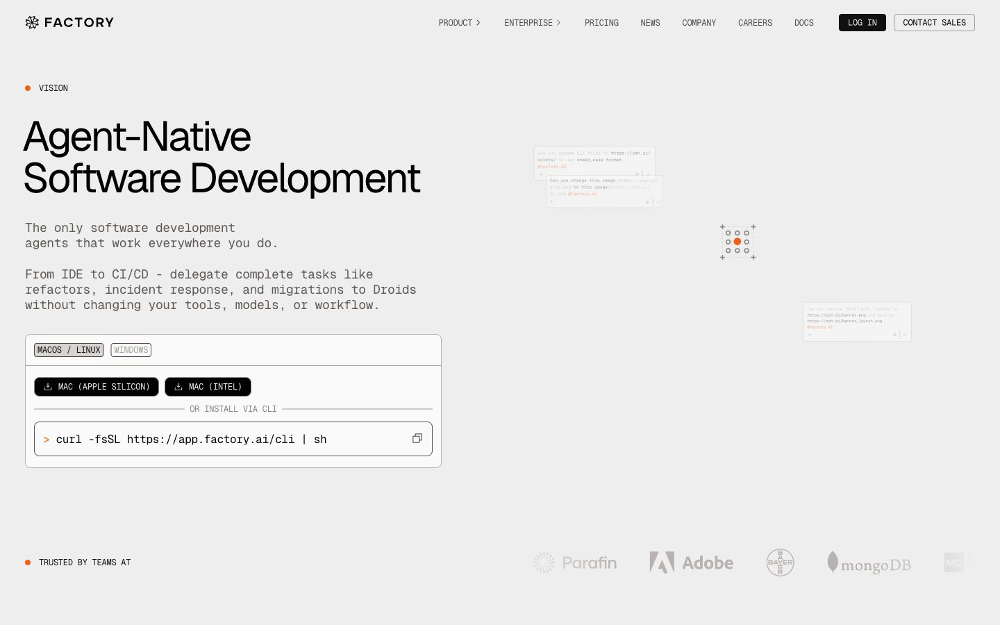

Factory.ai 的 Design.md 主题展示，围绕制造工业、工业工具、AI、B2B 产品组织页面。
Explore Factory.ai's light AI design system: Factory Black #020202, Factory Light Gray #eeeeee colors, Geist, Geist Mono typography, and DESIGN.md for AI...

#020202: #020202#eeeeee: #eeeeee#fafafa: #fafafa#b8b3b0: #b8b3b0#3d3a39: #3d3a39#a49d9a: #a49d9a#ef6f2e: #ef6f2e#1f1d1c: #1f1d1c#5c5855: #5c5855#8a8380: #8a8380#101010: #101010#2e2c2b: #2e2c2bfontFamily: [object Object]fontSize: [object Object]lineHeight: [object Object]letterSpacing: [object Object]control: 4pxcard: 4pxpreview: 4pxmobileGutter: 16pxouterGutter: 32pxsection: 72px